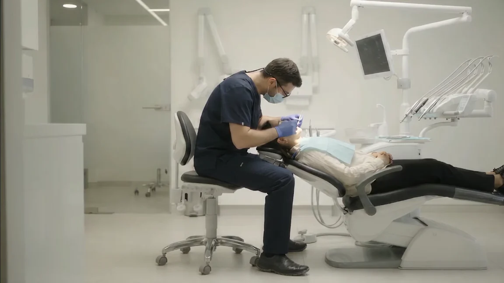
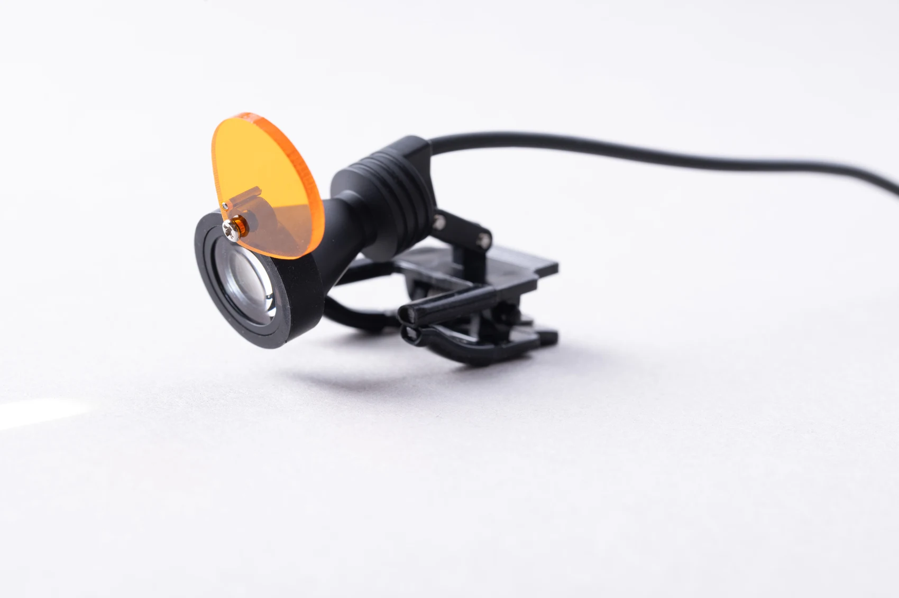

TERO OPTICS
See beyond
the ordinary.
Precision optics, light and support for the way you work.

THE HUMAN PERSPECTIVE
Leaning in
for a closer look.
On a standard stool and without loupes, the dentist bends the neck and rounds the back to see the working field.
A different way to see. A more considered way to work. Every detail begins with your perspective.
From the optics in front of you to the seat beneath you.
Discover the elements of the TERO collection.
Through the lens.


Small details.
A different world.
Look closer. The shape of the housing.
The meeting of frame and optic.
The details that define TERO.

Light.
Where it matters.
White light, with a warmer perspective at a touch. Lower the amber cover and watch the beam shift to a soft, warm tone. Explore the amber-filter setting for composite work.
The TERO chair.
Loading the 3D chair…
Drag to rotate
A clearer
understanding.
Which optical families can I explore?+
The TERO catalog lists the optical families and available configurations, including ERGO HD, ERGO HD ZM and Galilean HD.
How do I choose a magnification?+
Try the magnification comparison before discussing your fit and working distance with your supplier.
Is the interactive view an exact product model?+
The 3D scene is an illustrative design study based on TERO photography, not a dimensional engineering model. Refer to the original photographs and catalog for product details and available configurations.
Where can I find the full specifications?+
Open the TERO catalog ↗ to explore the optical systems. Frame and accessory combinations shown here are visual references.
Contact us
Tell us how we can help. You can also call TERO.